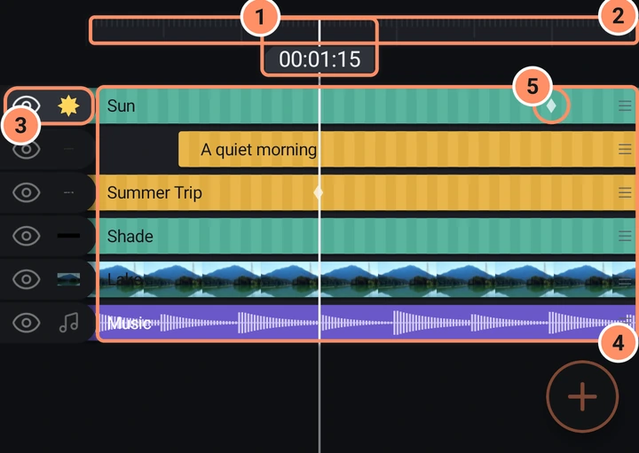
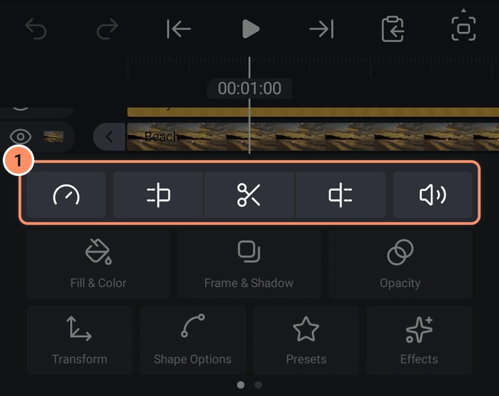

De tijdlijn
Lagen als balken in de tijd: scrubben, bijsnijden, verplaatsen, herschikken, keyframes, bladwijzers en snappen.
Op deze pagina
De tijdlijn is het gebied onder de afspeelbalk. Elke laag is een rij met een balk die laat zien wanneer de laag er is.
De tijdlijn lezen
- De afspeelkop is een vaste verticale lijn in het midden. De inhoud schuift eronder door. Het tijdlabel op de liniaal toont minuten, seconden en frames.
- Liniaal. Lange streepjes markeren elke seconde, kortere de halve seconden en frames, afhankelijk van hoe ver je hebt ingezoomd.
- Rijen. Eén rij per laag, met de voorste laag bovenaan. In een geopende groep (zie Groep bewerken in Vormen, tekenen en maskers) staan alleen de lagen van die groep. Links toont of verbergt het oogje de laag (een verborgen laag wordt niet getekend en zijn geluid is stil), en een miniatuurtje laat zien welke laag het is.
- Balkkleuren. Gewone lagen zijn blauwgroen met schuine strepen, tekstlagen amber, cameralagen karmijnrood en audiolagen violet met een golfvorm. Foto's en video's tonen een strook beeldjes. De naam van de laag staat op de balk.
- Labelkleuren. In het laagmenu kun je een laag markeren met een van elf labelkleuren. Die zie je als een klein gekleurd hoekje op de balk.
- Keyframe-ruitjes. De kleine ruitjes op een balk zijn keyframes. Op de geselecteerde laag zijn ze groter. Is er een eigenschap of effect geopend, dan zie je alleen de keyframes daarvan. Zie Keyframes en easing.

Gebaren
| Wat | Zo doe je het |
|---|---|
| Een laag selecteren | Tik op de balk of de rij. |
| Een laag tonen of verbergen | Tik op het oogje. |
| Selectie opheffen | Tik op de liniaal of op een lege plek. |
| De afspeelkop verplaatsen | Sleep ergens naar links of rechts. Als je loslaat, loopt de beweging nog even door en stopt op een heel frame. |
| Door de lagen scrollen | Sleep omhoog of omlaag. |
| In- of uitzoomen op de tijdlijn | Knijp met twee vingers. |
| Een laag bijsnijden | Selecteer de laag en sleep het ronde handvat aan het uiteinde dat je wilt verplaatsen. Heb je meerdere clips geselecteerd, dan verplaats je met één handvat dat uiteinde van allemaal. |
| Een laag in de tijd verplaatsen | Houd de balk ingedrukt tot hij omhoogkomt en sleep dan. |
| De volgorde van lagen veranderen | Houd het lege deel van een rij ingedrukt (niet de balk) en sleep omhoog of omlaag. Je kunt ook de drie streepjes rechts in een niet-geselecteerde rij slepen. |
| Een keyframe verplaatsen | Houd het ruitje op de geselecteerde laag ingedrukt en sleep opzij. |
| Meerdere lagen selecteren | Houd het oogje of de naam van een rij ingedrukt en schuif omhoog of omlaag. |
| Bladwijzer | Tik op het tijdlabel op de liniaal. |
Een gewone veeg over een balk verplaatst alleen de afspeelkop. Dat is met opzet: om een clip te verplaatsen moet je hem eerst ingedrukt houden, zodat een clip nooit per ongeluk verschuift.
Bereikt een video- of audioclip het einde van zijn bestand, dan wordt het handvat rood en voel je een tik: langer kan niet. Wil je een clip toch langer maken, vertraag hem dan met het gereedschap Snelheid (zie Foto's, video en snelheid).
Snappen
Bijsnijden, clips verplaatsen en keyframes verplaatsen snappen naar de afspeelkop, bladwijzers, het begin en einde van andere lagen en keyframes. Een gekleurde verticale lijn en een korte trilling laten merken dat iets snapt. Het trillen kun je uitzetten in Instellingen.
Bladwijzers
Tik op het tijdlabel op de liniaal om een bladwijzer op het huidige frame te zetten. Die verschijnt als een roze vlaggetje. Tik op dezelfde plek nog eens op het label om hem weg te halen. Bladwijzers zijn stoppunten voor de springknoppen en snappunten. Beats markeren (een tegel bij een audiolaag en een optie in het laagmenu) zet bladwijzers op de beats van een nummer: zie Audio.
Het gereedschap onder een geselecteerde laag
Als er een laag is geselecteerd, verschijnt onderaan een raster met gereedschap. De eerste rij heeft vijf kleine knoppen.
- Snelheid opent bij video- en audioclips het paneel Tijdremap: zie Foto's, video en snelheid.
- Begin bijsnijden knipt de clip zo af dat hij bij de afspeelkop begint.
- Splitsen knipt de clip bij de afspeelkop in tweeën. Het tweede deel wordt een nieuwe laag boven het eerste.
- Einde bijsnijden knipt de clip zo af dat hij bij de afspeelkop eindigt.
- Volume opent het volumepaneel voor geluid en video's.

Staat de afspeelkop buiten de clip, dan doen dezelfde knoppen iets anders en verdwijnt de knop die je niet kunt gebruiken. Vóór de clip toont de rij Begin verlengen tot de afspeelkop en Clip naar de afspeelkop verplaatsen; na de clip Clip naar de afspeelkop verplaatsen en Einde verlengen tot de afspeelkop. Verplaats je de clip, dan springt het begin (of het einde) naar de afspeelkop.
De grote knoppen daaronder zijn de laaggereedschappen.